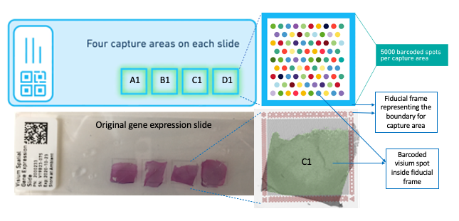
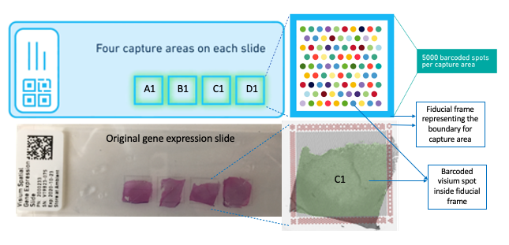

Visium Image Processing
Overview
*Visium imaging* is a part of whole *spatial transcriptomics* workflow, a barcoding-based transcriptome-wide technology released by 10X genomics.
 (https://www.10xgenomics.com/products/spatial-gene-expression)

(https://www.10xgenomics.com/products/spatial-gene-expression)

Why spatial transcriptomics or visium imaging??
Methods like RNAseq can profile single cells transcriptome-wide and enable researchers to identify cell type compositions but can necessarily destroy the spatial information. Multiplexing methods on other hand can provide spatial information but has significant limitations on the number of genes that can be processed and has issues with microscopy and related computational challenges. *spatial transcriptomics* provides solutions to these limitations allowing us to quantify gene expression with high spatial resolution. The key to this system is the *visium imaging* and *visium gene expression slide*, where the tissue sections from subjects goes onto the capture areas(green squares) on the slide. The whole slide is imaged at once and produces a huge output image file with all capture areas. The whole slide image has to be split into individual capture area images(necessarily JPEG or tiff) and processed accordingly for the downstream analysis.
This website describes the steps required to split, visualize and process the visium images from spatial transcriptomics projects generated by the 10x Genomics Visium commercial platform.

The above figure describes the VisiumLIBD pipeline, where sections (A) and (B) correspond to visium imaging and the rest describes the workflow in a step-by-step procedure. (C) First, the whole slide image is split into the respective capture areas. (D) Then the nuclei from individual tiffs are segmented using Kmeans color based segmentation (E) The output tiff files from (D) serve as input into the Spaceranger module for subsequent spatial transcriptomics processing and analysis. (F) Next we extract nuclei count per visium spot in the image. (G) Finally, the pipeline provides a GUI that allows the user to perform visual inspection of the segmentations by allowing the user to toggle between the visium and binary images, and also by providing zoom in/out options to clearly see the nuclei in the visium spot.
Cite VisiumLIBD
We hope that VisiumLIBD will be useful for your research. Please use the following information to cite the package and the overall approach. Thank you!
@article {,
author = {Tippani, Madhavi and other names to include},
title = {VisiumLIBD: a semiautomated Matlab pipeline for visualizing and processing high resolution visium images whose output is used for downstream spatial transcriptomics analyis},
elocation-id = {},
year = {2021},
doi = {},
publisher = {Oxford Bioinformatics},
abstract = {},
URL = {https://www.overleaf.com/read/fmvrpsyxgsbz},
eprint = {https://www.overleaf.com/read/fmvrpsyxgsbz},
journal = {bioRxiv}
}This is a project by the Imaging Development Team from Keri Martinowich’s Lab at the Lieber Institute for Brain Development.